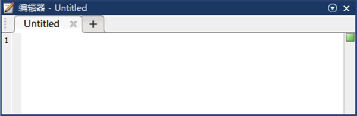
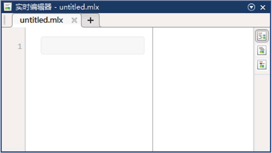
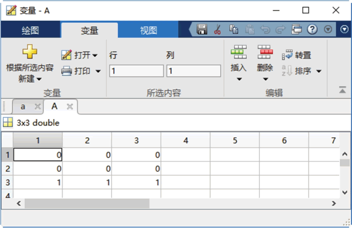
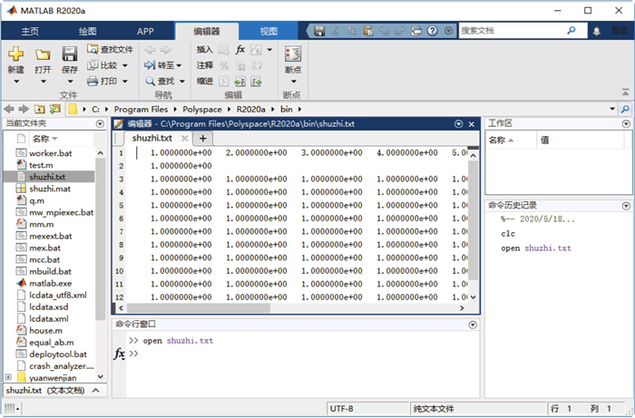
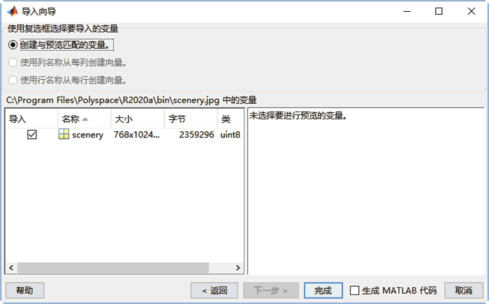
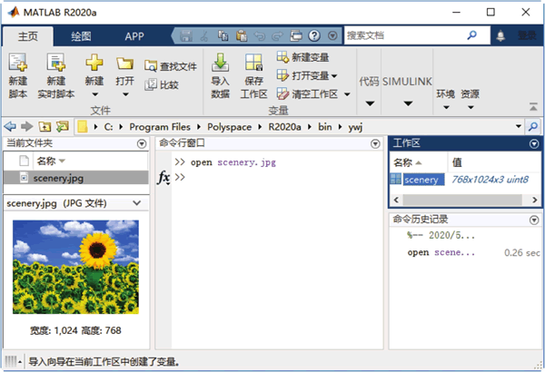
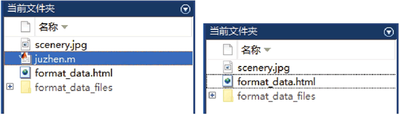

首页 > 编程笔记
MATLAB M文件详解
MATLAB 作为一种高级计算机语言，以一种人机交互式的命令行方式工作，还可以像其他高级编程语言一样进行控制流的程序设计。
M 文件是使用 MATLAB 编写的程序代码文件，之所以称为 M 文件，是因为这种文件都以“.m”作为文件扩展名。
M 文件可以分为两种类型：一种是函数式文件；另一种是命令式文件，也称之为脚本文件。
命令式文件不仅能够对工作区内已存在的变量进行操作，并能将建立的变量及其执行后的结果保存在 MATLAB 工作区中，在以后的计算中使用。除此之外，命令式文件执行的结果既可以显示输出，也可以使用 MATLAB 的绘图函数输出图形结果。
由于命令式文件的运行相当于在命令行窗口中逐行输入并运行，所以用户在编制此类文件时，只需要把要执行的命令按行编辑到指定的文件中。
在 MATLAB 主窗口的“主页”选项卡中选择“‘新建’->‘脚本’”命令，或直接单击“新建脚本”图标按钮，可打开如图 1 所示的 MATLAB“编辑器”窗口，在空白窗口中编写程序即可。
【实例】生成矩阵。输入下面的简单程序 mm.m：
单击“编辑器”选项卡中的“保存”图标按钮，在弹出的“保存为”对话框中，选择保存文件夹，文件的扩展名必须是 .m，单击“保存”按钮即可。
在运行函数之前，一定要把 M 文件所在的目录添加到 MATLAB 的搜索路径中，或者将函数式文件所在的目录设置成当前目录，使 mm.m 所在目录成为当前目录，或让该目录处在 MATLAB 的搜索路径上。
然后在 MATLAB 命令行窗口中运行以下指令，便可得到 M 文件的输出结果。
MATLAB 函数或函数式文件是 MATLAB 中最重要的组成部分，MATLAB 提供的各种各样的工具箱几乎都是以函数形式给出的，是内容极为丰富的函数库，可以实现各种各样的功能。这些函数可作为命令使用，所以函数有时又称为函数命令。
MATLAB 中的函数即函数式文件，是能够接受输入参数并返回输出参数的 M 文件，标志是文件内容的第一行为 function 语句。在 MATLAB 中，函数名和 M 文件名必须相同，函数式文件可以有返回值，也可以只执行操作而无返回值。
值得注意的是，命令式 M 文件在运行过程中可以调用 MATLAB 工作域内的所有数据，并且产生的所有变量均为全局变量。也就是说，这些变量一旦生成，就一直保存在内存空间中，直到用户执行命令 clear 或 quit 时为止。而函数式文件中的变量除特殊声明外，均为局部变量，函数式文件执行之后，只保留最后的结果，不保留任何中间过程，所定义的变量也只在函数的内部起作用，并随着调用的结束而被清除。
【实例】验证两个数是否相等。
① 创建函数式文件“equal_ab.m”：
1) “新建脚本”按钮：新建一个 M 文件。
2) “新建实时脚本”按钮：新建一个实时脚本，如下图所示。
3) 打开变量”按钮：打开所选择的数据对象。单击该按钮之后，进入如下图所示的变量编辑窗口，在这里可以对数据进行各种编辑操作。
下表所示为在 MATLAB 中用 open 函数打开的文件类型及说明。
执行上述函数命令后，则系统自动打开文件。
【实例】打开名为 shuzhi 的 txt 文件。
在 MATLAB 命令行窗口中输入以下命令：
【实例】打开 JPG 文件。
在 MATLAB 命令行窗口中输入以下命令：
单击“完成”按钮，在工作区显示通过 JPG 文件创建的变量，如下图所示。
在 MATLAB 中，winopen 命令用于在合适的应用程序（Windows）中打开文件，将要打开的文件的名称指定为字符向量。
【实例】在系统 Web 浏览器中打开文件。
MATLAB 程序如下：
默认情况下，MATLAB 将根据操作系统预设项删除文件或将其放入回收站。当系统预设为放入回收站时，要永久删除所选内容，应按 Shift+Delete 快捷键。
【实例】删除保存的文件。MATLAB程序如下：
在 MATLAB 中，recycle 函数用于设置选项以便将已删除文件移到回收文件夹，它的调用格式及说明如下表所示。
M 文件是使用 MATLAB 编写的程序代码文件，之所以称为 M 文件，是因为这种文件都以“.m”作为文件扩展名。
M文件分类
用户可以使用任何文本编辑器或文字处理器生成或编辑 M 文件，但是在 MATLAB 提供的 M 文件编辑器中生成或编辑 M 文件最为简单、方便而且高效。M 文件可以分为两种类型：一种是函数式文件；另一种是命令式文件，也称之为脚本文件。
1) 命令式文件
在 MATLAB 中，实现某项功能的一串 MATLAB 语句命令与函数组合成的文件称为命令式文件。这种 M 文件在 MATLAB 的工作区内对数据进行操作，能在 MATLAB 环境下直接执行。命令式文件不仅能够对工作区内已存在的变量进行操作，并能将建立的变量及其执行后的结果保存在 MATLAB 工作区中，在以后的计算中使用。除此之外，命令式文件执行的结果既可以显示输出，也可以使用 MATLAB 的绘图函数输出图形结果。
由于命令式文件的运行相当于在命令行窗口中逐行输入并运行，所以用户在编制此类文件时，只需要把要执行的命令按行编辑到指定的文件中。
在 MATLAB 主窗口的“主页”选项卡中选择“‘新建’->‘脚本’”命令，或直接单击“新建脚本”图标按钮，可打开如图 1 所示的 MATLAB“编辑器”窗口，在空白窗口中编写程序即可。

图 1 “编辑器”窗口
图 1 “编辑器”窗口
【实例】生成矩阵。输入下面的简单程序 mm.m：
function f=mm
%This file is devoted to demonstrate the use of "for"
%and to create a simple matrix
for i=1:4
for j=1:4
a(i,j)=1/(i+j-1);
end
end
a
%后面的内容为注释内容，程序运行时，这部分内容是不起作用的，可以使用 help 命令查询。为保持程序的可读性，应该建立良好的书写风格。单击“编辑器”选项卡中的“保存”图标按钮，在弹出的“保存为”对话框中，选择保存文件夹，文件的扩展名必须是 .m，单击“保存”按钮即可。
在运行函数之前，一定要把 M 文件所在的目录添加到 MATLAB 的搜索路径中，或者将函数式文件所在的目录设置成当前目录，使 mm.m 所在目录成为当前目录，或让该目录处在 MATLAB 的搜索路径上。
然后在 MATLAB 命令行窗口中运行以下指令，便可得到 M 文件的输出结果。
>> mm
a =
1.0000 0.5000 0.3333 0.2500
0.5000 0.3333 0.2500 0.2000
0.3333 0.2500 0.2000 0.1667
0.2500 0.2000 0.1667 0.1429
2) 函数式文件
MATLAB 函数通常是指 MATLAB 系统中已设计好的完成某一种特定的运算或实现某一特定功能的一个子程序。MATLAB 函数或函数式文件是 MATLAB 中最重要的组成部分，MATLAB 提供的各种各样的工具箱几乎都是以函数形式给出的，是内容极为丰富的函数库，可以实现各种各样的功能。这些函数可作为命令使用，所以函数有时又称为函数命令。
MATLAB 中的函数即函数式文件，是能够接受输入参数并返回输出参数的 M 文件，标志是文件内容的第一行为 function 语句。在 MATLAB 中，函数名和 M 文件名必须相同，函数式文件可以有返回值，也可以只执行操作而无返回值。
值得注意的是，命令式 M 文件在运行过程中可以调用 MATLAB 工作域内的所有数据，并且产生的所有变量均为全局变量。也就是说，这些变量一旦生成，就一直保存在内存空间中，直到用户执行命令 clear 或 quit 时为止。而函数式文件中的变量除特殊声明外，均为局部变量，函数式文件执行之后，只保留最后的结果，不保留任何中间过程，所定义的变量也只在函数的内部起作用，并随着调用的结束而被清除。
【实例】验证两个数是否相等。
① 创建函数式文件“equal_ab.m”：
function s=equal_ab
% 此函数用来验证两数是否相等
a=input('请输入a\n');
b=input('请输入b\n');
if a~=b
input('a不等于b');
else
input('a等于b')
end
② 调用函数：
>> equal_ab 请输入a 1 % 用户输入 请输入b 2 % 用户输入 a不等于b
M文件编辑器
“主页”选项卡是 MATLAB 一个非常重要的数据分析与管理窗口，它的主要按钮功能如下。1) “新建脚本”按钮：新建一个 M 文件。
2) “新建实时脚本”按钮：新建一个实时脚本，如下图所示。

图 2 “实时编辑器”窗口
图 2 “实时编辑器”窗口
3) 打开变量”按钮：打开所选择的数据对象。单击该按钮之后，进入如下图所示的变量编辑窗口，在这里可以对数据进行各种编辑操作。

图 3 “变量编辑”窗口
图 3 “变量编辑”窗口
打开M文件
在 MATLAB 中，open 函数用于在 MATLAB 或外部应用程序中打开文件，它的调用格式及说明如下表所示。| 调用格式 | 说明 |
|---|---|
| open name | 在适当的应用程序中打开指定的文件或变量 |
| A = open(name) | 如果 name 是 MAT 文件，将返回结构体；如果 name 是图窗，则返回图窗句柄。否则，open 将返回空数组 |
下表所示为在 MATLAB 中用 open 函数打开的文件类型及说明。
| 文件类型 | 说明 |
|---|---|
| .m 或 .mix | 在 MATLAB 编辑器中打开代码文件 |
| .mat | 使用语法 A = open(name) 调用时，返回结构体 A 中的变量 |
| .fig | 在图窗窗口中打开图窗 |
| .mdl 或 .six | 在 Simulink 中打开模型 |
| .prj | 在 MATLAB Compiler 部署工具中打开工程 |
| .doc* | 在 Microsoft Word 中打开文档 |
| .exe | 运行可执行文件（仅在 Windows 系统上） |
| 在 Adobe Acrobat 中打开文档 | |
| .ppt* | 在 Microsoft PowerPoint 中打开文档 |
| .xls* | 启动 MATLAB 导入向导 |
| .htm 或 .html | 在 MATLAB 浏览器中打开文档 |
| .slxc | 打开 Simulink 缓存文件的报告文件 |
执行上述函数命令后，则系统自动打开文件。
【实例】打开名为 shuzhi 的 txt 文件。
在 MATLAB 命令行窗口中输入以下命令：
open shuzhi.txt % 将文件路径设置为当前路径运行结果如下图所示。

图 4 打开文件
图 4 打开文件
【实例】打开 JPG 文件。
在 MATLAB 命令行窗口中输入以下命令：
open scenery.jpg % 将JPG文件路径设置为当前路径执行上述命令后，弹出如下图所示的“导入向导”窗口。

图 5 “导入向导”窗口
图 5 “导入向导”窗口
单击“完成”按钮，在工作区显示通过 JPG 文件创建的变量，如下图所示。

图 6 存储变量
图 6 存储变量
在 MATLAB 中，winopen 命令用于在合适的应用程序（Windows）中打开文件，将要打开的文件的名称指定为字符向量。
【实例】在系统 Web 浏览器中打开文件。
MATLAB 程序如下：
>> winopen format_data.html % 在系统 Web 浏览器中打开文件format_data.html执行上述命令后，弹出浏览器，载入指定的文件。
M文件删除与回收
在 MATLAB 中，delete 函数用于删除文件或对象，它的调用格式及说明如下表所示。| 调用格式 | 说明 |
|---|---|
| delete filename | 从磁盘中删除 filename，而不需要验证 |
| delete filename1...filenameN | 从磁盘上删除指定的多个文件 |
| delete(obj) | 删除指定的对象。如果 obj 是数组，则 delete 将删除数组中的所有对象。obj 仍保留在工作区中，但不再有效 |
默认情况下，MATLAB 将根据操作系统预设项删除文件或将其放入回收站。当系统预设为放入回收站时，要永久删除所选内容，应按 Shift+Delete 快捷键。
【实例】删除保存的文件。MATLAB程序如下：
>> clear
>> close all
>> A= 1:10; % 创建向量A
>> save('juzhen.m','A') % 将变量保存到当前文件夹中的文件 juzhen.m 中
>> delete juzhen.m % 删除当前文件夹下的文件juzhen.m
运行结果如下图所示。

图 7 创建文件并删除文件
图 7 创建文件并删除文件
在 MATLAB 中，recycle 函数用于设置选项以便将已删除文件移到回收文件夹，它的调用格式及说明如下表所示。
| 调用格式 | 说明 |
|---|---|
| status = recycle | 返回使用 delete 函数删除的文件的当前状态。status 为 off 时，delete 函数永久删除这些文件；status 为 on 时，将己删除文件移至其他位置 |
| previous State = recycle(state) | 将 MATLAB 的回收选项设置为指定状态（on 或 off）。返回的 previousState 值在运行语句之前为回收状态 |
关注公众号「站长严长生」，在手机上阅读所有教程，随时随地都能学习。内含一款搜索神器，免费下载全网书籍和视频。

微信扫码关注公众号